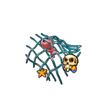

Получено: файл; исходный URL. На странице постройки изображение подписано Невод. Страница ссылается на zombicity.info; загружен файл по тому же пути с moy.su, побайтовое совпадение не проверено. Страница: источник.
Невод
браузерная версия; платформа не уточнена- Тип
- Материал
- Покупка
- нет данных
- Продажа
- нет данных
- Как получить
- нет данных
- Применение
- нет данных
- Особенности
- нет данных
- Версия и дата
- браузерная версия; платформа не уточнена
Данные по источнику · браузерная игра; платформа страницы не указана · 04.06.2014 публикация; снимок 17.06.2018
Предварительно: Содержание подтверждено по снимку Wayback. Архив — копия zf.3dn.ru, не независимый источник. Имена файлов значков не доказывают название предмета.. Требуется сверка.
- Получение
- По статье: сокровища на Тропических островах или награда заданий. Нельзя купить.
- Продажа
- 1000 монет.


Связанные сущности
нет проверенных связей — требуется сверка.